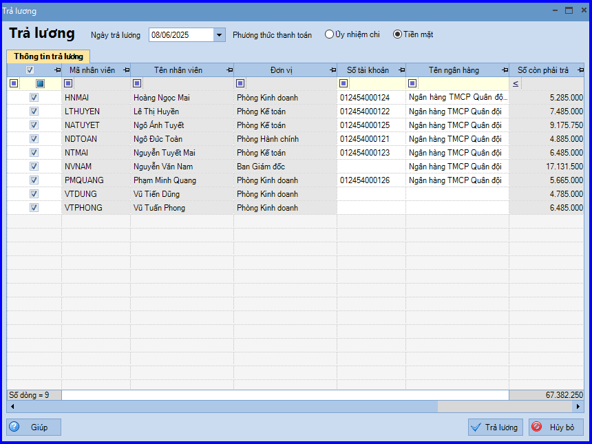
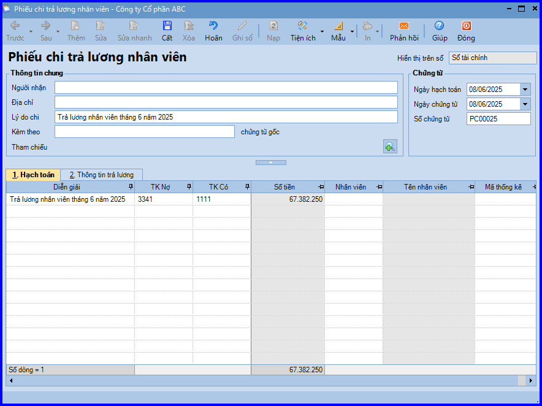

Hướng dẫn cách hạch toán ghi sổ nghiệp vụ trả lương bằng tiền mặt trên phần mềm Misa
Hàng tháng, căn cứ vào Bảng lương đã được duyệt, bộ phận nhân sự sẽ gửi yêu cầu trả lương cho bộ phận kế toán. Khi đó sẽ phát sinh các hoạt động:
- Kế toán thanh toán lập Phiếu chi, sau đó chuyển cho kế toán trưởng và Giám đốc ký duyệt.
- Thủ quỹ căn cứ vào Phiếu chi đã được duyệt thực hiện xuất quỹ tiền mặt và ghi sổ quỹ.
- Nhân sự nhận tiền và căn cứ vào bảng lương để tiến hành trả lương cho nhân viên. Còn kế toán thanh toán sẽ căn cứ vào Phiếu chi có chữ ký của thủ quỹ và người nhận tiền để ghi sổ kế toán tiền mặt.
1. Cách định khoản hạch toán trả lương bằng tiền mặt:
Nợ TK 334 - Phải trả người lao động (3341, 3348)
Có TK 111 - Tiền mặt (1111, 1112)
2. Các bước hạch toán ghi sổ nghiệp vụ trả lương bằng tiền mặt trên phần mềm Misa
2.1. Trường hợp 1: Doanh nghiệp không thực hiện tính lương trực tiếp trên phần mềm Misa mà thực hiện riêng, độc lập trên file Excel
Khi ghi sổ nghiệp vụ trả lương bằng tiền mặt sẽ thực hiện tại: phân hệ "Quỹ/ Chi tiền".
2.2. Trường hợp 2: Doanh nghiệp có thực hiện tính lương trên phân hệ tiền lương trên phần mềm Misa
Thực hiện lần lượt các bước như sau:
- Sau khi Lập bảng tính lương, vào phân hệ "Quỹ" => chọn tab "Thu, chi tiền"
- Ấn "Thêm\Trả lương".
- Nhập Ngày trả lương.

- Tích chọn xong những nhân viên được trả lương, các bạn ấn "Trả lương" => Phần mềm tự động sinh ra chứng từ "Phiếu chi trả lương nhân viên".

- Kiểm tra chứng từ, sau đó ấn "Cất".
- Chọn chức năng "In" trên thanh công cụ, sau đó chọn mẫu phiếu chi cần in.
CHÚ Ý: Trường hợp Thủ quỹ có tham gia sử dụng phần mềm, sau khi phiếu chi trả lương nhân viên được lập, phần mềm sẽ tự động sinh ra phiếu chi trên tab "Đề nghị thu, chi" của Thủ quỹ. Thủ quỹ sẽ thực hiện ghi sổ phiếu chi vào sổ quỹ.
KẾ TOÁN DIỆU TÂM chúc các bạn làm tốt!
=============================
Nếu bạn muốn thành thạo các kỹ năng làm kế toán trên phần mềm Misa
Thì bạn có thể tham khảo "Khóa Học Thực Hành Kế Toán Trên Phần Mềm Misa" tại Công ty đào tạo Kế Toán Diệu Tâm
Trong khóa học này, bạn sẽ được dạy cách lên sổ sách, lập báo cáo tài chính trên phần mềm Misa
Chi tiết về chương trình đào tạo bạn xem tại đây nhé: Khóa học thực hành kế toán trên Misa
=============================
=============================
Nếu bạn muốn thành thạo các kỹ năng làm kế toán trên phần mềm Misa
Thì bạn có thể tham khảo "Khóa Học Thực Hành Kế Toán Trên Phần Mềm Misa" tại Công ty đào tạo Kế Toán Diệu Tâm
Trong khóa học này, bạn sẽ được dạy cách lên sổ sách, lập báo cáo tài chính trên phần mềm Misa
Chi tiết về chương trình đào tạo bạn xem tại đây nhé: Khóa học thực hành kế toán trên Misa
=============================